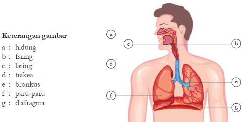
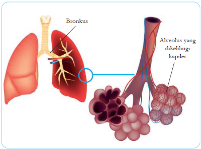
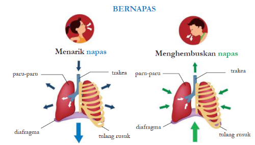

A. Pengertian Sistem Pernapasan
Sistem pernapasan (sistem respirasi) adalah sistem organ yang berfungsi untuk mengambil oksigen (O₂) dari udara dan mengeluarkan karbon dioksida (CO₂) serta uap air. Pernapasan sangat penting karena oksigen dibutuhkan untuk proses respirasi seluler yang menghasilkan energi (ATP) untuk aktivitas tubuh.
Proses pernapasan terdiri dari dua tahap utama:
- Pernapasan Eksternal: Pertukaran gas antara udara di paru-paru dengan darah di kapiler paru-paru
- Pernapasan Internal: Pertukaran gas antara darah di kapiler dengan sel-sel tubuh
Fakta Menarik
Manusia dewasa bernapas sekitar 12-20 kali per menit saat istirahat. Dalam satu hari, kita menghirup sekitar 11.000 liter udara! Paru-paru memiliki luas permukaan sekitar 70-100 m² (setengah lapangan tenis) karena adanya jutaan alveolus.
B. Organ-Organ Sistem Pernapasan
Sistem pernapasan manusia terdiri dari saluran pernapasan dan organ-organ yang terlibat dalam pertukaran gas.

Gambar 4.1: Organ-organ sistem pernapasan — a) Hidung, b) Faring, c) Laring, d) Trakea, e) Bronkus, f) Paru-paru, g) Diafragma
1. Hidung (Cavum Nasalis)
Hidung adalah organ pertama yang dilewati udara. Di dalam rongga hidung terdapat:
- Bulu hidung: Menyaring debu dan kotoran
- Selaput lendir (mukosa): Melembabkan dan menghangatkan udara
- Konka (tulang karang hidung): Memperluas permukaan untuk pertukaran panas
2. Faring (Tenggorokan)
Faring adalah persimpangan antara saluran pernapasan dan saluran pencernaan. Faring terbagi menjadi tiga bagian:
- Nasofaring: Bagian atas, di belakang hidung
- Orofaring: Bagian tengah, di belakang mulut
- Laringofaring: Bagian bawah, mengarah ke laring dan esofagus
3. Laring (Pangkal Tenggorokan)
Laring terletak di antara faring dan trakea. Di dalam laring terdapat:
- Pita suara (vocal cords): Bergetar menghasilkan suara
- Epiglotis: Katup yang menutup laring saat menelan untuk mencegah makanan masuk ke saluran pernapasan
- Tulang rawan: Memberi struktur pada laring
4. Trakea (Batang Tenggorokan)
Trakea adalah pipa sepanjang 10-12 cm yang menghubungkan laring dengan bronkus. Dinding trakea diperkuat oleh cincin tulang rawan berbentuk huruf C yang mencegah trakea kolaps (kempes).
Dinding dalam trakea dilapisi silia (rambut getar) dan sel penghasil lendir yang berfungsi menyaring partikel asing.
5. Bronkus dan Bronkiolus
Trakea bercabang menjadi dua bronkus (kanan dan kiri) yang masuk ke paru-paru. Bronkus bercabang-cabang menjadi bronkiolus yang lebih kecil. Percabangan ini membentuk pohon bronkial.
6. Paru-Paru (Pulmo)
Paru-paru adalah organ utama sistem pernapasan. Manusia memiliki dua paru-paru:
- Paru-paru kanan: Terdiri dari 3 lobus (gelambir)
- Paru-paru kiri: Terdiri dari 2 lobus (lebih kecil untuk memberi ruang bagi jantung)
Paru-paru dilindungi oleh selaput pleura (selaput paru-paru) yang terdiri dari dua lapisan dengan cairan di antaranya untuk mengurangi gesekan.

Gambar 4.2: Struktur paru-paru menunjukkan bronkus dan alveolus yang dikelilingi kapiler darah untuk pertukaran gas
7. Alveolus (Kantung Udara)
Di ujung bronkiolus terdapat jutaan alveolus (kantung udara kecil) yang merupakan tempat pertukaran gas. Alveolus memiliki karakteristik:
- Dinding sangat tipis (satu lapis sel)
- Dikelilingi oleh kapiler darah yang sangat banyak
- Permukaan sangat luas (70-100 m²)
- Berfungsi sebagai tempat difusi O₂ dan CO₂
8. Diafragma
Diafragma adalah otot berbentuk kubah yang memisahkan rongga dada dan rongga perut. Kontraksi dan relaksasi diafragma berperan penting dalam mekanisme pernapasan.
C. Mekanisme Pernapasan
Pernapasan melibatkan dua proses utama: inspirasi (menarik napas) dan ekspirasi (menghembuskan napas). Berdasarkan otot yang terlibat, pernapasan dibedakan menjadi:

Gambar 4.3: Mekanisme pernapasan — Inspirasi (menarik napas) dan Ekspirasi (menghembuskan napas) dengan pergerakan diafragma dan tulang rusuk
1. Pernapasan Dada
Melibatkan otot antar tulang rusuk (otot interkostal).
| Fase | Proses | Perubahan |
|---|---|---|
| Inspirasi | Otot interkostal berkontraksi | Tulang rusuk terangkat → rongga dada membesar → tekanan udara di paru-paru mengecil → udara masuk |
| Ekspirasi | Otot interkostal relaksasi | Tulang rusuk turun → rongga dada mengecil → tekanan udara di paru-paru membesar → udara keluar |
2. Pernapasan Perut
Melibatkan otot diafragma.
| Fase | Proses | Perubahan |
|---|---|---|
| Inspirasi | Diafragma berkontraksi (mendatar) | Rongga dada membesar → tekanan mengecil → udara masuk |
| Ekspirasi | Diafragma relaksasi (melengkung ke atas) | Rongga dada mengecil → tekanan membesar → udara keluar |
3. Pertukaran Gas di Alveolus
Pertukaran gas terjadi melalui proses difusi (perpindahan zat dari konsentrasi tinggi ke rendah):
- Oksigen (O₂): Berdifusi dari alveolus (konsentrasi tinggi) ke kapiler darah (konsentrasi rendah), kemudian diikat oleh hemoglobin dalam eritrosit
- Karbon dioksida (CO₂): Berdifusi dari kapiler darah (konsentrasi tinggi) ke alveolus (konsentrasi rendah), kemudian dikeluarkan saat ekspirasi
D. Volume Udara Pernapasan
Volume udara yang terlibat dalam pernapasan dapat diukur dengan spirometer.
| Jenis Volume | Pengertian | Volume Normal |
|---|---|---|
| Volume Tidal (VT) | Udara yang masuk/keluar saat pernapasan normal | ± 500 ml |
| Volume Cadangan Inspirasi (VCI) | Udara yang masih bisa dihirup setelah inspirasi normal | ± 1500-3000 ml |
| Volume Cadangan Ekspirasi (VCE) | Udara yang masih bisa dihembuskan setelah ekspirasi normal | ± 1000-1500 ml |
| Volume Residu (VR) | Udara yang tersisa di paru-paru setelah ekspirasi maksimal (tidak bisa dikeluarkan) | ± 1000-1500 ml |
| Kapasitas Vital (KV) | Volume udara maksimal yang bisa dikeluarkan setelah inspirasi maksimal (VT + VCI + VCE) | ± 3000-5000 ml |
| Kapasitas Total Paru-Paru | Seluruh volume udara di paru-paru (KV + VR) | ± 4000-6000 ml |
E. Gangguan dan Penyakit pada Sistem Pernapasan
| Penyakit | Penyebab / Keterangan |
|---|---|
| Asma | Penyempitan saluran napas akibat alergi, stres, atau iritasi. Gejala: sesak napas, mengi (bunyi ngik), batuk. |
| Bronkitis | Peradangan pada bronkus akibat infeksi virus/bakteri atau iritasi (rokok). Gejala: batuk berdahak, sesak napas. |
| Pneumonia | Peradangan paru-paru (alveolus terisi cairan) akibat infeksi bakteri, virus, atau jamur. Gejala: demam, batuk, sesak napas. |
| TBC (Tuberkulosis) | Infeksi bakteri Mycobacterium tuberculosis yang menyerang paru-paru. Gejala: batuk lebih dari 3 minggu, demam, berat badan turun. |
| Emfisema | Rusaknya dinding alveolus sehingga permukaan pertukaran gas berkurang. Umum pada perokok berat. Gejala: sesak napas kronis. |
| Rinitis | Peradangan selaput lendir hidung (pilek) akibat alergi atau infeksi. Gejala: hidung tersumbat, bersin-bersin. |
| Faringitis | Peradangan faring (radang tenggorokan) akibat infeksi virus/bakteri. Gejala: sakit tenggorokan, sulit menelan. |
| Laringitis | Peradangan laring (pita suara). Gejala: suara serak atau hilang. |
| Kanker Paru-Paru | Pertumbuhan sel abnormal di paru-paru, sering disebabkan oleh merokok. Gejala: batuk berdarah, sesak napas, nyeri dada. |
| Sesak Napas (Dispnea) | Kesulitan bernapas yang bisa disebabkan oleh berbagai faktor (asma, penyakit jantung, obesitas, dll). |
F. Cara Menjaga Kesehatan Sistem Pernapasan
💡 Tips Paru-Paru Sehat
- Tidak merokok: Hindari rokok dan asap rokok (perokok pasif) yang merusak paru-paru
- Olahraga teratur: Meningkatkan kapasitas paru-paru dan kekuatan otot pernapasan
- Hindari polusi: Gunakan masker di tempat berpolusi tinggi, hindari area berasap
- Jaga kebersihan: Cuci tangan rutin untuk mencegah infeksi saluran pernapasan
- Vaksinasi: Lakukan vaksinasi flu dan pneumonia untuk mencegah infeksi
- Hindari alergen: Jika memiliki alergi, hindari pemicu alergi (debu, bulu hewan, serbuk sari)
- Pola makan sehat: Konsumsi makanan kaya antioksidan (buah, sayur) untuk menjaga kesehatan paru-paru
- Latihan pernapasan: Lakukan latihan pernapasan dalam untuk memperkuat paru-paru
- Cukup tidur: Istirahat yang cukup untuk pemulihan sistem pernapasan
- Periksa kesehatan: Rutin memeriksakan kesehatan paru-paru, terutama jika perokok atau berisiko
G. Rangkuman
- Sistem pernapasan berfungsi mengambil O₂ dan mengeluarkan CO₂ serta uap air.
- Organ pernapasan: hidung → faring → laring → trakea → bronkus → bronkiolus → alveolus (di paru-paru).
- Alveolus adalah tempat pertukaran gas O₂ dan CO₂ melalui difusi.
- Pernapasan dada menggunakan otot antar tulang rusuk, pernapasan perut menggunakan otot diafragma.
- Volume udara pernapasan: tidal (500 ml), cadangan inspirasi (1500-3000 ml), cadangan ekspirasi (1000-1500 ml), residu (1000-1500 ml).
- Penyakit pernapasan: asma, bronkitis, pneumonia, TBC, emfisema, kanker paru-paru.
- Cara menjaga kesehatan: tidak merokok, olahraga teratur, hindari polusi, vaksinasi, pola makan sehat.
H. Latihan Soal
A. Pilihan Ganda
- Organ pernapasan yang berfungsi sebagai tempat pertukaran gas adalah...
- a. Bronkus
- b. Trakea
- c. Alveolus
- d. Faring
- Otot yang berperan dalam pernapasan perut adalah...
- a. Otot interkostal
- b. Diafragma
- c. Otot perut
- d. Otot dada
- Volume udara yang masuk/keluar saat pernapasan normal disebut...
- a. Volume cadangan
- b. Volume residu
- c. Volume tidal
- d. Kapasitas vital
- Penyakit pernapasan yang disebabkan oleh bakteri Mycobacterium tuberculosis adalah...
- a. Pneumonia
- b. Bronkitis
- c. TBC
- d. Asma
- Fungsi epiglotis adalah...
- a) Menghasilkan suara
- b) Menutup laring saat menelan
- c) Menyaring udara
- d) Menghangatkan udara
B. Essay
- Sebutkan organ-organ sistem pernapasan secara urut dari luar ke dalam!
- Jelaskan perbedaan mekanisme pernapasan dada dan pernapasan perut!
- Mengapa alveolus sangat efektif untuk pertukaran gas? Jelaskan strukturnya!
- Sebutkan minimal 5 penyakit pada sistem pernapasan beserta penyebabnya!
- Jelaskan cara-cara menjaga kesehatan sistem pernapasan!